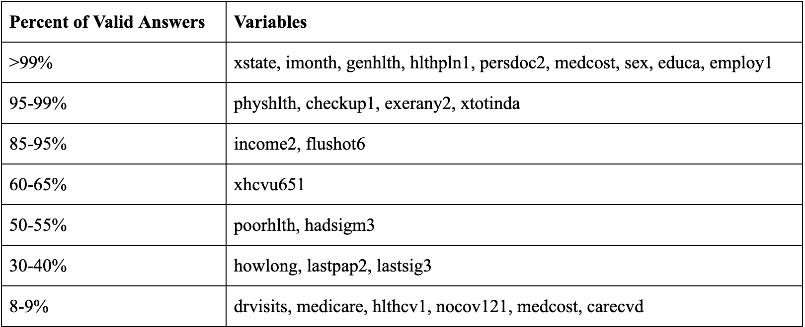
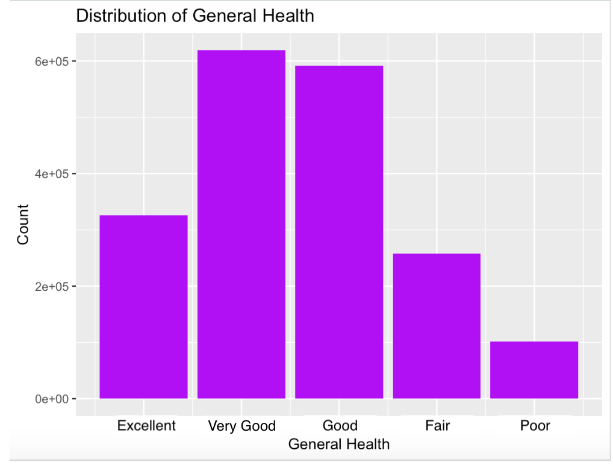
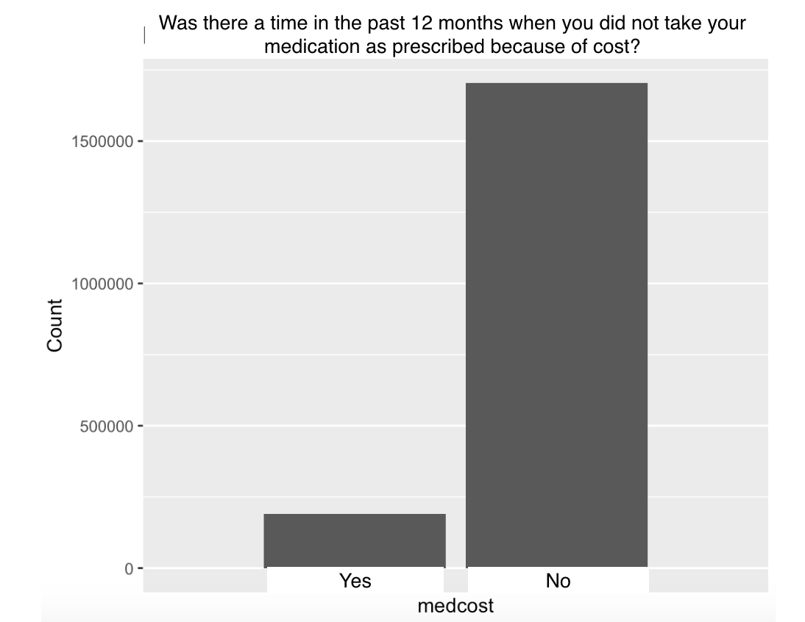
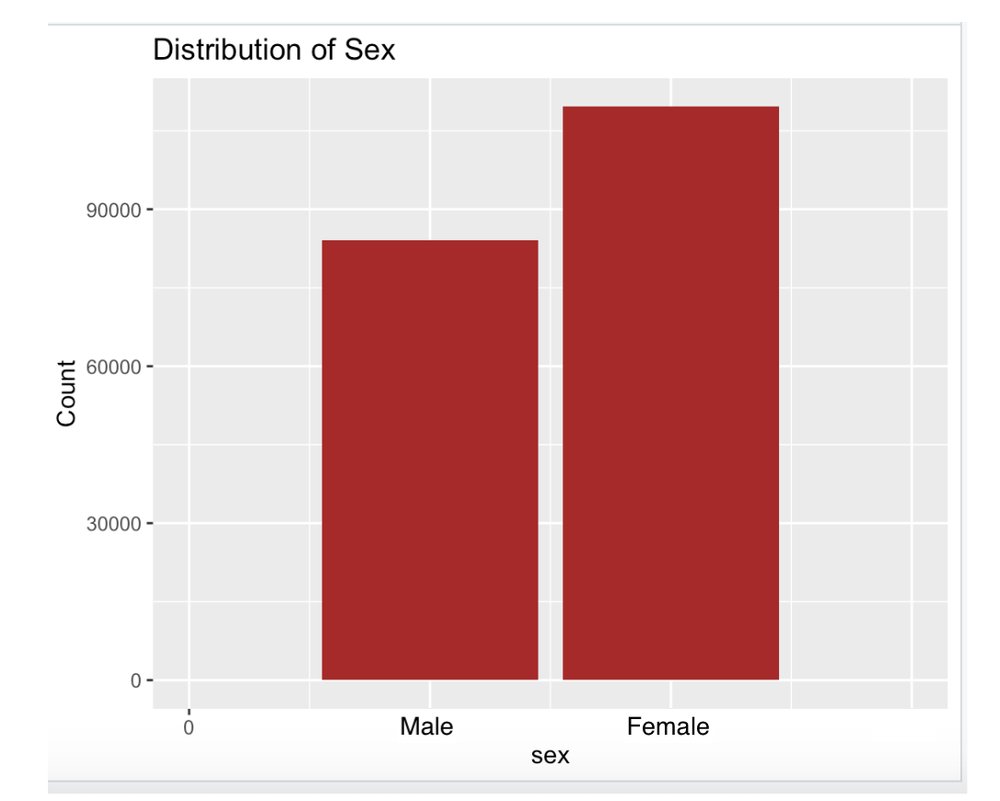

Our project is going to try to see the impact of the Affordable Care Act on low income Americans. We are looking at the prevalence of preventative care before and after the ACA was implemented, using 2014 as our before baseline and 2015-2018 as after. We are looking at data relating to checkup frequency, insurance, screenings for diseases, and cost barriers to seeking help. We limited our data to New England to try to limit confounding variables. All of the states within our data set adopted the medicaid expansion and had no other major changes to healthcare within this time period.
The data is from the BRFSS (Behavioral Risk Factor Surveillance System) database. BRFSS is a project administered by the Center for Disease Control and Prevention (CDC). It is structured as a system of ongoing health-related telephone surveys for all 50 U.S. states and participating US territories. The survey questions focus on health-related risk behaviors, chronic health conditions, health care access, and preventative services. The CDC has been collecting this data since 1984, making it the largest continuously-conducted health survey in the world. We decided to use this database because its magnitude would allow us to analyze public health trends over time, and the internal data weighting helps make sample data more representative of the population from which the data were collected. The dataset contains ~400,000 data points for every year, so compared to other similar studies / surveys, the generated sample is quite large. The CDC used Random Digit Dialing, so the sample was randomly selected from all possible US phone numbers. This hopefully ensures a diverse set of data points. There is still going to be slight sampling bias, since the survey was conducted by telephone, limiting the people contacted to those with access to phones.
The data is relatively clean, but too large to do analysis on. There are about ~400k people interviewed per year. We have 2014-2018 (5 years) so we have about 2M people interviewed, and for each of those people about ~450 columns about them. This is more than enough data for what we hope to do.
To start, we prioritized what relevant columns we wanted to filter out. We ended up filtering out 422/450 columns; the remaining 28 focused on the demographics of the people (state, income, general health), as well as questions about access to preventative care and the role that cost plays into healthcare decision making. Most of the identity based questions had little to none missing values. However, many of the other important columns only contained valid responses within 8-9% of the rows. The following table maps out this distribution. Note: "Valid" answers refers to answers that are not logged as N/A, dk (don't know), rf (refused to answer), or blank.
This table indicates that while many of the background information variables have a high percentage of "valid" answers, most of the variables that indicate access to preventative care or screenings have a relatively low percent of significant answers (8-9%). These include:
More information on these variables, as well as the whole table, can be found in the README.
It is unlikely that there were duplicates within the individual dataset for each year; however, it is possible for the same person to have taken the survey over the course of 2015-2018. These duplicates are impossible to detect, since there is no unique identifier for each survey taken. They also likely do not make a difference in the overall outcome, since there are hundreds of thousands of data points.
There were no data type issues because every variable is represented by an integer number. If the variable is a string, float, etc. it is categorized to a specific set. For example, the state name “Alabama” takes on the value 1 becasue it is alphabetically first. In addition, income is set up in ranges, for example “over $75,000” takes on the value 8. To visualize the data we will need to unparse all of these integer encodings. For the smaller set of data that we collected from the BRFSS, we did not “throw away” any individual rows after filtering for the columns that we thought most necessary for our dataset. We did, however, limit our scope to the Northeast, thus this data and analysis may not be representative of the entire US.
There is no way to map the overall distribution of the dataset, since almost every variable is separate and categorical. We highlighted the distribution for three background variables: sex, general health, and medical cost barrier within the 2015-2018 data. As seen in the graphs, there are more female participants than male. The majority of participants self identified as having "excellent", "very good", or "good" health. Close to 95% of participants said that in the past year there was not a time that they needed to see a doctor but could not because of cost. These trends are expected within the US population, and future analysis will help us dive deeper if there are significant differences over the years of access to preventative services.
  One initial challenge we encountered was the change of the survey design. We had previously thought to use 2011-2014 datasets as a baseline, to compare with 2015-2018. However, after further examination of the BRFSS database, we noticed that many of the important variables we hoped to analyze were not part of the survey until 2014. We made the choice to just use 2014 as the baseline in hopes of conducting more concrete statistical tests on the variables that best exemplified changes in cost barriers to health concerns.
Through our data processing, we noticed that many of these important variables had a large (>90%) proportion of null responses. We therefore decided to analyze the entire Northeast region to ensure we have enough data points in the 2014 baseline year for these variables. Future analysis will focus on the relationship between these variables to help us make correlative claims about the role of the ACA in preventative care. Seeing as almost all of our variables are categorical, we anticipate using the Chi-Squared statistical test for analysis.